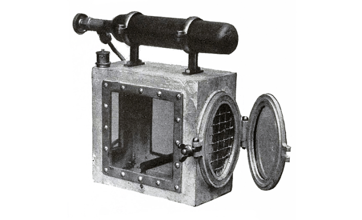

The canary in a coal mine is more than a metaphor—for nearly a century, this bright yellow songbird saved lives around the world by alerting miners of deadly harms deep underground.
There, hazardous gases including methane, carbon dioxide, and carbon monoxide can form, the latter of which can kill people within two hours, even at low levels. Canaries are particularly sensitive to carbon monoxide, and they show hints of distress before humans do, swaying and fainting as they fall ill. That’s because they’re so tiny and have a super efficient respiratory system, breathing in twice as much gas with each breath compared with us. In some cases, miners revived the birds by supplying them with oxygen.
Mining companies in countries including the United States, Canada, and the United Kingdom began employing canaries as gas detectors around the early 20th century. A few decades earlier, coal mining had taken off as steam-powered train lines grew around the globe, but deadly accidents forced coal companies to come up with safety measures.

This type of cage, equipped with oxygen supply, was used to revive canaries exposed to harmful gases in mines. Credit: Wikimedia Commons.
To test for dangerous gases, these companies initially had workers carry flames around mines, but this risked explosions. In 1906, mine workers in England used canaries to carefully enter a mine after an explosion, and a few years later, a U.K. law required workers to “bring two small, caged birds” down into the mines with them. Around this time, the U.S. Bureau of Mines tested a whole host of critters for the job, including guinea pigs, chickens, dogs, and pigeons. But the canaries performed best.
Canaries also aided in rescues—in the case of explosions or fires, they warned rescuers of hazardous conditions.
Read more: “In the Land of the Eyeless Dragons”
They weren’t hard to get. In the United Kingdom, for example, mining companies often sourced them from pet shops or private breeders. Most of these working birds had color imperfections or other features seen as flaws that made them less likely to be bought by the public, and females were typically cheaper due to their “poor singing ability.” Some mining companies even built aviaries in their offices to breed these birds.
Workers often treated these avian assistants like beloved pets, whistling to them in the dark depths of the mines. A newspaper article printed in Scotland in 1926 claimed the birds were “well looked after.”
But miners began to say goodbye to these feathery friends as electronic sensors, invented in the mid-1920s, took their place. Compared with other countries, the U.K. ended the practice relatively late: On this day in 1986, the British government announced a plan to phase out canaries from mining pits. “New electronic detectors will replace the bird because they are said to be cheaper in the long run and more effective in indicating the presence of pollutants in the air otherwise unnoticed by miners,” the BBC wrote.
Canaries carried on similar duties sporadically in the decades that followed. For instance, people fearing chemical weapon attacks in Baghdad and New York in the early 2000s bought up these birds.
Today, canaries are primarily proverbial in this context. But the songbirds’ sacrifices, of course, live on in the saying. 
Enjoying Nautilus? Subscribe to our free newsletter.
Lead image: George McCaa, U.S. Bureau of Mines / Wikimedia Commons